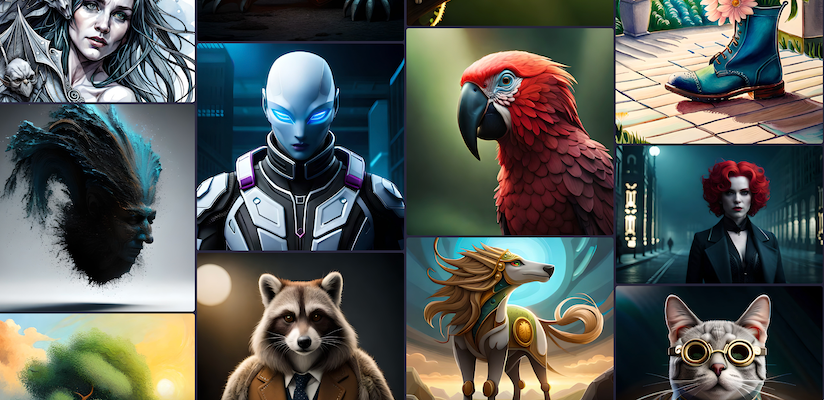

After relaunching as a studio for creators, LimeWire acquires BlueWillow, a Midjourney competitor
D Rakhshit . SEP 21, 2023
In the Wild West of generative AI, a new, unlikely cowboy is riding into town. LimeWire — once infamous for music piracy and incurring the wrath of the music industry before shutting down — last year pivoted under new owners into the world of content creation. Now, to build that out further, today it’s announcing the acquisition of BlueWillow, a popular generative AI image creation platform that competes with services like Midjourney and Stable Diffusion. BlueWillow was only founded earlier this year, but with interest in generative AI being what it is right now, Discord becoming a go-to platform for creatives to engage with these tools, and the main version of its service being free to use, it really took off. BlueWillow currently claims to be the second-largest AI image generating community on Discord (Midjourney is the first), with a community of 2.5 million members and 500 million+ images created.
The plan will be to keep BlueWillow’s presence on Discord but also integrate its functionality into LimeWire’s website, where it will form a part of LimeWire’s paid and advertising-based free service tiers for creators. It will also become the anchor for LimeWire to develop more media services in the future. Financial terms of the deal are not being disclosed, but the acquisition will not include any of the talent working at BlueWillow. Ritankar Das, the founder and head of the company, said in an interview that the team that built BlueWillow are advising LimeWire on the platform in a transitionary period, but that they plan to eventually leave, en masse, to work on a new AI venture that is still in stealth.
For LimeWire, the deal underscores the company’s ongoing efforts to grow its community of users and revenues. When the startup was initially relaunched, its plan was to build an NFT marketplace for music creators, and to that end it has raised about $17.5 million through token sales, with its investors including Arrington Capital (run by Mike Arrington, the founder and former editor of this site), Kraken, Crypto.com Capital, CMCC Global, Hivemind, Deadmau5, and others. Sources have told us that it was valued at around $60 million earlier this year. But with interest in NFTs fizzling out, LimeWire founders Paul and Julian Zehetmayr have diversified into building a platform to create and distribute content, with NFTs, according to Julian, “more of a sideline” now rather than the core business of LimeWire.
LimeWire’s core business, meanwhile, was in need of more tools. The company has hired a team of engineers to build subscription and other features for creatives, but when it came to AI-based image generation, it was relying on third-party integrations. Acquiring BlueWillow gives LimeWire the ability to offer its own image generation tools and to expand on them: its plans are to eventually add video and audio generation, too. While BlueWillow is helping expand that tech stack, another major addition is going to be its user base: Julian Zehetmayr said in an interview that LimeWire only has “thousands” of smaller creators in its long tail, alongside 100 “bigger creators” using its platform.
BlueWillow, similar to Midjourney, was launched and developed as a bootstrapped effort, with the financing coming from the founder. (Das himself is a wunderkind who graduated from Berkeley at 18 after finishing a double degree in bioengineering and chemical biology in three years, and then went on to do postgraduate work at Oxford and Cambridge, eventually starting a health tech startup, which was acquired in 2022 by CirrusDx.) Das’ initial motivation for building BlueWillow, he said, was that it was less about building an AI money spinner, but wanting to get a better understanding of how generative AI tools worked and could be built. “What we saw was that a lot of people were developing generative AI models for images,” he said, and he wanted in on that so-called “Cambrian explosion” that people love to refer to in tech. But while there has been a lot of focus on a small handful of players that have built their own Large Language Models to power services, what Das and his team saw was that there were actually dozens of LLMs out in the market that were out there, and if someone used a number of them together, that would accelerate the time to build the basic service and let its engineers focus on building better user interfaces and other parts of the front end to make using BlueWillow a piece of cake.
“Making it really easy for users” became the primary goal, he said, and that involved BlueWillow building its own “weights” and customizations to improve image making, depending on what BlueWillow was being used to illustrate and for whom. “Architects and advertisers [for example] demand very different looks and feels, so we focused on building what would work the best for each.” But longer term, some of the pressures and costs of scaling and building the next phase of BlueWillow were not really on the cards for Das and his team — compute power is not free. There were no immediate plans to raise money, and so when LimeWire came calling, it seems that it was not a hard choice to decide to sell up.
Popular Post